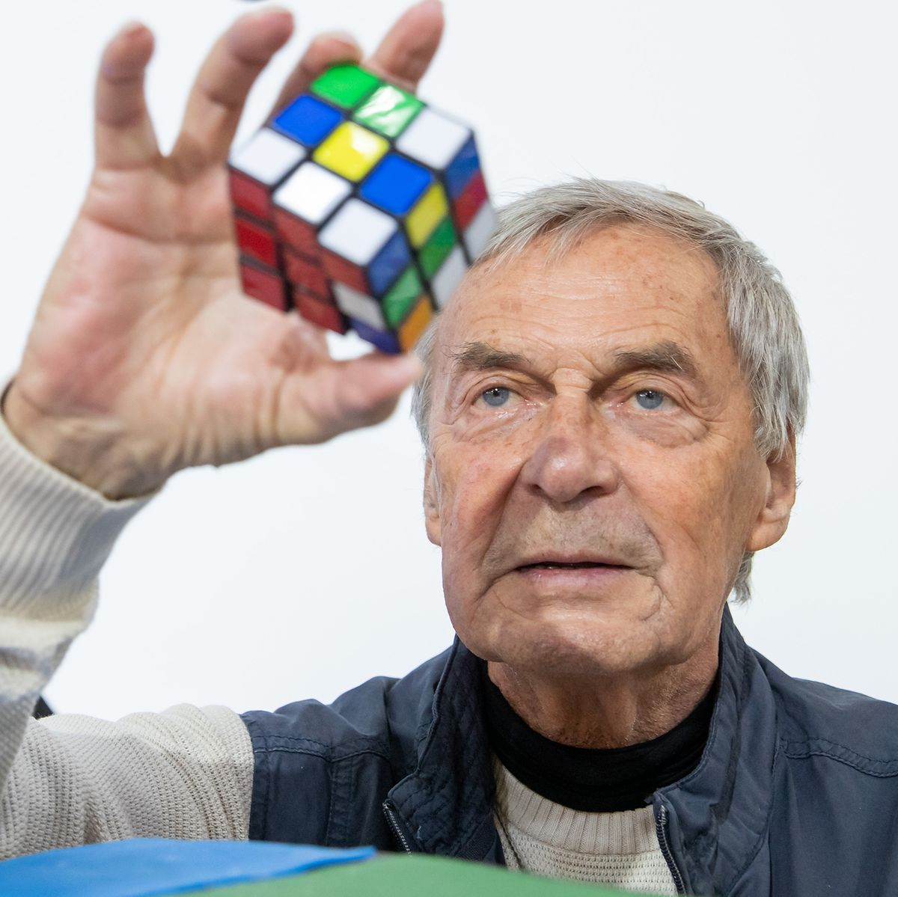
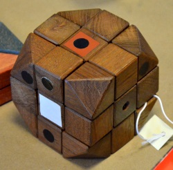

¿Quién es Erno Rubik?
Ernő Rubik es un arquitecto, diseñador y profesor húngaro, nacido el 13 de julio de 1944 en Budapest. Es conocido por haber inventado el Cubo de Rubik, un rompecabezas tridimensional que se convirtió en un fenómeno mundial. Originalmente, creó el cubo en 1974 para enseñar conceptos de geometría, pero pronto se dio cuenta de su potencial como juguete. Desde su comercialización en los años 80, el Cubo de Rubik ha vendido millones de unidades en todo el mundo. Además de su famoso invento, Rubik ha trabajado en la promoción de la educación en ciencia, tecnología, ingeniería y matemáticas (STEM).
¿Cómo llegó a la creación de Puzzles?
Ernő Rubik llegó a la creación de puzzles a partir de su formación como arquitecto y profesor de diseño. Estaba interesado en los conceptos de geometría, espacio y estructura, y buscaba formas innovadoras de enseñar estos temas a sus estudiantes. En 1974, Rubik creó el Cubo de Rubik como una herramienta pedagógica para demostrar cómo las piezas individuales podían moverse sin desarmar el todo. A medida que desarrollaba el cubo, se dio cuenta de su potencial como rompecabezas tridimensional, lo que lo llevó a patentar su invento en 1975 y a comercializarlo más adelante.
¿Qué logró con su invención?
Con su invención, Ernő Rubik logró crear uno de los puzzles más icónicos del mundo: el Cubo de Rubik. Este rompecabezas no solo se convirtió en un fenómeno de ventas global, sino que también inspiró a millones de personas a interesarse en la resolución de problemas, el pensamiento lógico y las matemáticas. Además, el cubo se ha convertido en un símbolo de la cultura popular y ha influido en la creación de competiciones internacionales de speedcubing, donde los participantes compiten para resolver el cubo en el menor tiempo posible. Su invento también ha impulsado el interés en los puzzles mecánicos y ha sido un motor para la innovación en la educación STEM.

Erno Rubik, el creador del primer Cubo Rubik.

Primer diseño del cubo de rubik, el mismo fue modificado posteriormente